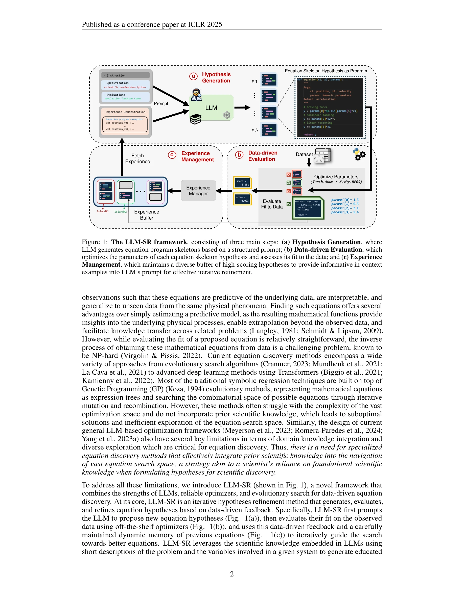
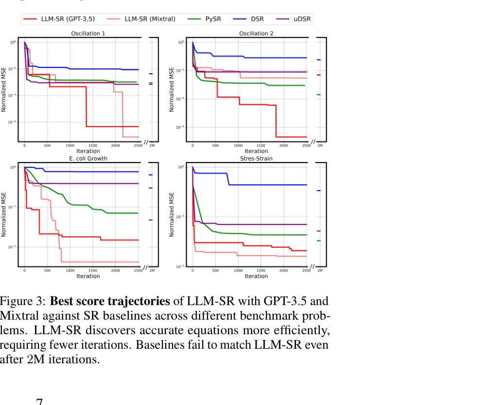

저자: Parshin Shojaee, Kazem Meidani, Shashank Gupta, Amir Barati Farimani, Chandan K Reddy | 날짜: 2024 | DOI: 10.48550/ARXIV.2404.18400

Figure 1: The LLM-SR framework, consisting of three main steps: (a) Hypothesis Generation, where
LLM-SR은 대규모 언어모델의 과학 지식과 코드 생성 능력을 활용하여 데이터로부터 과학 방정식을 발견하는 프레임워크로, 방정식을 프로그램으로 표현하고 진화 탐색과 결합한다.

Figure 3: Best score trajectories of LLM-SR with GPT-3.5 and
Figure 1: The LLM-SR framework, consisting of three main steps: (a) Hypothesis Generation, where
총평: LLM-SR은 과학적 방정식 발견이라는 중요한 문제에 대해 LLM의 강점을 창의적으로 활용하는 혁신적인 접근법을 제시하며, 실험적으로 우수한 성능을 입증했다. LLM 암기 위험을 고려한 신중한 벤치마크 설계와 포괄적인 평가가 이 작업의 신뢰성을 높인다.